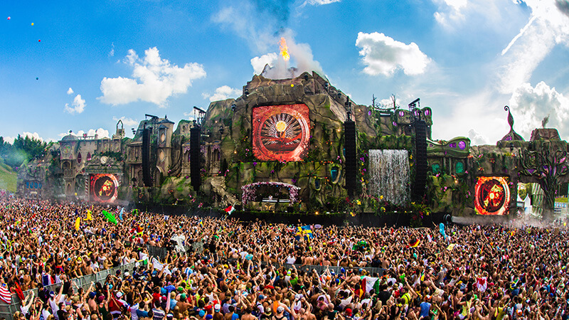
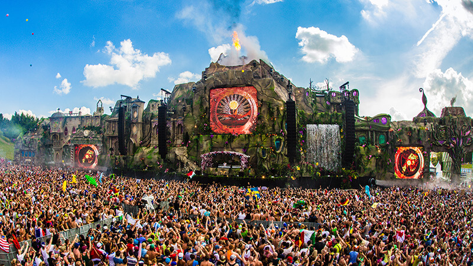

Tomorrowland is a Belgian electronic dance music festival held in Boom, Belgium. Tomorrowland was first held in 2005 and has since become one of the world's largest and most notable music festivals. It now stretches over two weekends and usually sells out in minutes. The festival is known for its elaborate stages, incredible lineups, and its magical and fantasy-like atmosphere. The festival is held in the town of Boom, located in the Antwerp province of Belgium.
 
